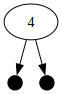
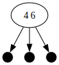
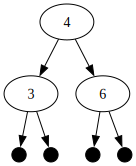
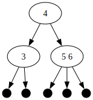
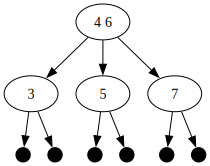
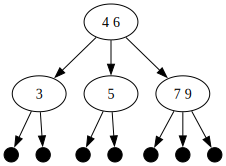
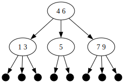
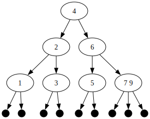
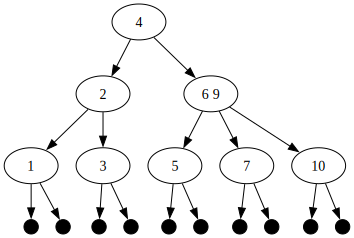
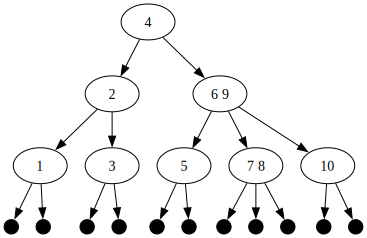

Part C: Data structures: 2-3 trees (40 points)
Introduction
In this section, we are going to implement a non-trivial data structure called a "2-3 tree". The main reason for this is to demonstrate that even fairly complex data structures can often be implemented simply using OCaml's algebraic datatypes.
2-3 trees are an example of a "self-balancing search tree". There are a number of other self-balancing search tree datatypes, including red-black trees, AVL trees, weight-balanced trees etc.
2-3 trees are also the simplest example of a family of data structures collectively known as "B-trees". (The "B" has no known significance except that one of the people who invented them (Rudolf Bayer) has a name that starts with "B". Also, he was working at Boeing at the time.) However, 2-3 trees were actually invented before B-trees by the computer scientist John Hopcroft.
Note
The discussion of this data structure will be fairly lengthy, but don't be intimidated: the amount of code you need to write is quite small.
We will be using 2-3 trees to implement sets of integers. (They can be used to implement many other things as well, such as key/value mappings with ordered keys.) These sets will have better performance on lookup than using (say) lists of integers as sets (\(\Theta(log\ n)\) vs. \(\Theta(n)\)).
A 2-3 tree is a tree of elements which are orderable (so integers are a good candidate). It consists of three kinds of nodes:
-
A leaf node, which has no associated data.
-
A 2-node, which is an internal node which stores a single data value (here, an integer) and has two subtrees (called the "left" and "right" subtrees) as its children.
-
A 3-node, which is an internal node which stores two data values (here, two integers) and has three subtrees (called the "left", "middle", and "right" subtrees) as its children.
The name "2-3 tree" clearly refers to the fact that internal nodes can have either 2 or 3 subtrees. A valid 2-3 tree also must satisfy these invariants:
-
The tree must be ordered. A 2-node's value must be strictly larger than any value stored in its left subtree and strictly smaller than any value stored in its right subtree. A 3-node stores two values; the smallest one is strictly larger than any value in its left subtree, the largest one is strictly smaller than any value in its right subtree, and all the values in the middle subtree must be between the two node values. So, for instance, if a 3-node stores values 5 and 9, its left subtree's values must be less than 5, its middle subtree's values must be between 6 and 8, and its right subtree's values must be greater than 9.
-
All leaf nodes must be at the same depth. That means that any path from a leaf node up to the root (topmost node) of the tree must contain the same number of nodes. Put differently, the tree must be "balanced". Having the tree balanced is very important because it guarantees fast lookup! In contrast, if we allowed the tree to get unbalanced, you might lose the \(\Theta(log\ N)\) lookup property. Therefore, when inserting items into a tree or removing items from a tree, it's important to do so in a way that keeps the tree balanced.
-
The data values stored in the tree must contain no duplicates. Actually, this is not an absolute requirement, but it will simplify the presentation, so we'll adopt it. Since we want to implement sets of integers, and sets have no repeated elements, this is not a problem.
In addition, the 2-3 trees we will be working with are purely functional, so (for instance) inserting an integer into a tree will yield a new tree instead of changing the old one.
Examples
Let's look at some 2-3 trees. We'll convert the list [4;6;3;5;7;9;1;2;10;8]
into a 2-3 tree by successively adding each list element to an initially empty
tree (which is just a leaf node), starting from the head of the list towards
the tail.
This is a leaf node. It doesn't store any data. There's not much else to say about it.

When you add 4 to the tree, it becomes a 2-node with two subtrees, both of which are leaf nodes.

Now we add 6 to the tree. Instead of creating new nodes, we simply switch the 2-node for a 3-node, which can hold both the 4 and the 6. This node has three subtrees, all of which are leaves.

Finally something interesting happens! We want to add a 3 to the tree. However, neither a 2-node or a 3-node can store 3 data values, so we have to create new nodes. Most tree-like data structures would replace one of the leaves with a node, but if we do that, our tree will become unbalanced, so we have to do something different. What we do is to split the 3-node (which stores two values) into two 2-nodes (which also store two values, one per node), and add a new 2-node at the root of the tree whose subtrees are the two 2-nodes that we just split from the original 3-node. This maintains the invariant that the tree is always balanced. However, when we split the original 3-node into two 2-nodes, we also have to maintain the order invariant. So really, what we have to do is this:
-
We add the new data value (3) to the two data values stored in the 3-node (4 and 6) and order the three values: 3, then 4, then 6.
-
We split the 3-node into two 2-nodes, using the smallest and largest of the three values (3 and 6) as the data values to store in the two 2-nodes. Since the 3-node's subtrees were all leaves, the new 2-nodes' subtrees are also all leaves.
-
We use the remaining value (4) to create a new 2-node whose subtrees are the split nodes we just created.
In other words: the tree grows upwards, not downwards. The new root node is the 2-node with the 4 in it.
Note
If you didn't understand the preceding discussion, keep reading and we'll see more examples.

Now we want to add 5 to the tree. First, we find the lowest non-leaf node where the 5 should go. Since 5 is larger than 4, we look in the right subtree of the root node. Then we find the 2-node with the 6 in it, and all of its subtrees are leaves, so we stop there. At this point, since the node is a 2-node, we can add the 5 to the node and create a 3-node, and we're done. Notice that the tree is still balanced and the ordering invariant still holds.

ACK! What happened here? We wanted to add a 7 to the tree. The lowest non-leaf node where the 7 should go is clearly the 3-node with 5 and 6 as its values. However, we can't add to this node, so we have to split it. We take the three values (5 and 6 from the 3-node, and 7 that we are adding to the tree) and make new 2-nodes from the smallest and largest values (5 and 7) and push the 6 upwards. Notice that the two new 2-nodes containing 5 and 7 replace the old 3-node containing 5 and 6. Then we take the remaining value (6) and push it into its parent node (a 2-node), which can absorb the 6 and become a 3-node. (We won't always be that lucky).

Now we want to add a 9 to the tree. We follow the path to the lowest non-leaf node where the 9 should go, and find the 2-node with the 7. We change it into a 3-node holding both a 7 and a 9, and we're done.

Now we want to add a 1 to the tree. By a process similar to the previous insertion, we get the 2-node with the 3 in it and convert it into a 3-node with a 1 and 3, and we're done.

Hoo boy, what happened here? We just wanted to add a 2 to the tree. Searching for the lowest non-leaf node in the tree where the 2 should go gets us to the 3-node storing 1 and 3. Adding the 2 gives the numbers (1, 2, 3) and we have to split this into two 2-nodes, one with 1 and one with 3. The 2 is pushed up one level, where it finds another 3-node (with 4 and 6). This is the trickiest case. We combine the 2 with the 4 and 6 to get (2, 4, 6), which means we have to split the nodes again at a higher level. The left node will be a 2-node containing the number 2 and having the two previously split nodes (with 1 and 3) as its subtrees. The right node will be a 2-node containing the number 6 and having the other two subtrees of the original 3-node (which had 4 and 6) as its subtrees. Then we make a new root node (a 2-node) containing the remaining value 4 and having the other two trees (starting from 2 and 6) as its subtrees. This is how the tree grows upwards.
That was probably really confusing. Reread it a couple of times and look at the diagrams until you understand what happened. In principle, adding a new value to a tree could cause a chain of node splits going all the way from the bottom of the tree to the top.
To reiterate: let's say we need to add a new element to a 3-node. Let's also say that the parent node of the 3-node is also a 3-node. We split the lower 3-node into two 2-nodes and have one value left over. Now the upper 3-node has four subtrees to deal with (the two new subtrees from the split and the two other subtrees it previously had) as well as one new value. So it gets split into two 2-nodes, each of which gets two of the four subtrees, and there is one value left over, which gets pushed upwards again. While doing all this, we also have to keep everything ordered correctly.
Whew! Fortunately, that's all there is to 2-3 trees. We've seen examples of everything that can happen, other than trying to add a number to a tree which is already in the tree. (In that case, just return the tree unchanged.)

Now we want to add 10 to the tree. We split the 3-node with 7 and 9 into two nodes, one of which has 7 and the other of which has 10. Then we push the 9 up one level and convert the 2-node containing 6 to a 3-node containing 6 and 9.

Now we want to add 8 to the tree. We go down to the 2-node containing 7 and make it a 3-node containing 7 and 8.
That completes our description of 2-3 trees. Now we have to implement this in OCaml!
We will use the following type definition for 2-3 trees containing integers:
type tree =
| Leaf
| Node2 of tree * int * tree (* left tree, value, right tree *)
| Node3 of tree * int * tree * int * tree
(* left tree, left value, middle tree, right value, right tree *)
Here is the description of the functions you have to implement.
1. Tree searching [10 points]
Write a function called tree_search that takes two arguments:
an int and a tree,
and returns true if the int is present in the tree,
or false otherwise.
Tip
Remember, the tree is ordered! Only search as much of the tree as you need to, or you will lose marks.
This function should be tail-recursive.
2. Tree insertion [30 points]
For this problem,
you have to complete a partial implementation
of insertion of an int into a 2-3 tree.
You don't have to start from scratch,
because our old friend Ben Bitfiddle
spent a few hours trying unsuccessfully to implement it himself.
His friend Eva Lu Ator found him fast asleep on his desk, snoring loudly.
On his computer was the following code:
type insertion =
| NoSplit of tree (* we didn't have to split a node *)
| Split of tree * int * tree (* we had to split a node *)
let rec insert_helper i t =
match t with
(* Base cases. *)
| Leaf -> NoSplit (Node2 (Leaf, i, Leaf))
| Node2 (_, j, _) when i = j -> NoSplit t (* i is already in tree *)
| Node3 (_, j, _, k, _) when i = j || i = k -> NoSplit t (* ditto *)
| Node2 (Leaf, j, Leaf) when i < j ->
(* add i to tree; change 2-node to 3-node *)
NoSplit (Node3 (Leaf, i, Leaf, j, Leaf))
| Node2 (Leaf, j, Leaf) -> (* i > j *)
NoSplit (Node3 (Leaf, j, Leaf, i, Leaf))
| Node3 (Leaf, j, Leaf, k, Leaf) when i < j ->
(* split; watch the order! *)
Split (Node2 (Leaf, i, Leaf), j, Node2 (Leaf, k, Leaf))
| Node3 (Leaf, j, Leaf, k, Leaf) when i > j && i < k ->
Split (Node2 (Leaf, j, Leaf), i, Node2 (Leaf, k, Leaf))
| Node3 (Leaf, j, Leaf, k, Leaf) -> (* i > k *)
Split (Node2 (Leaf, j, Leaf), k, Node2 (Leaf, i, Leaf))
(* Recursive cases. *)
| Node2 (t1, j, t2) when i < j -> (* insert into t1 *)
begin
match insert_helper i t1 with
| NoSplit t1' -> NoSplit (Node2 (t1', j, t2))
| Split (t1a, i', t1b) -> NoSplit (Node3 (t1a, i', t1b, j, t2))
end
| Node2 (t1, j, t2) -> (* i > j; insert into t2 *)
failwith "TODO"
| Node3 (t1, j, t2, k, t3) when i < j -> (* insert into t1 *)
begin
match insert_helper i t1 with
| NoSplit t1' -> NoSplit (Node3 (t1', j, t2, k, t3))
| Split (t1a, i', t1b) -> (* split nodes *)
failwith "TODO"
end
| Node3 (t1, j, t2, k, t3) when i > j && i < k -> (* insert into t2 *)
failwith "TODO"
| Node3 (t1, j, t2, k, t3) -> (* i > k; insert into t3 *)
failwith "TODO"
let tree_insert i t =
match insert_helper i t with
| NoSplit t' -> t'
| Split (t1, j, t2) -> Node2 (t1, j, t2)
Eva Lu looked at the code for a while, and finally said:
"This is all correct so far."
However, she didn't have time to finish the code herself,
and Ben looks like he won't be up for several more hours,
so it's your job to finish the code
by removing the failwith "TODO" lines in insert_helper
and replacing them with the correct code.
Don't change tree_insert.
In particular, notice that Ben has designed a special type to represent the result of adding a new value to a tree:
type insertion =
| NoSplit of tree (* we didn't have to split a node *)
| Split of tree * int * tree (* we had to split a node *)
What this means is the following.
When you insert a new int into the tree, two things can happen.
First, you could eventually end up
adding the int to an existing 2-node, making it a 3-node.
If this happens,
the insert_helper function returns NoSplit newtree
(where newtree is the new tree with the new int).
Alternatively, if you have to add an int to a 3-node,
you will have to split that node into two subtrees
(each of which has a root which is a 2-node),
and there will be one int left over which needs to be pushed up one level.
In this case, you return Split (ltree, i, rtree)
where ltree is the left tree,
rtree is the right tree, and i is the int being pushed up a level.
If nodes get split all the way to the top of the tree,
the insert function creates a new root node
and the tree is now one level deeper than it was before.
Note
This function isn't tail-recursive, which is clear by looking at the code that is already written.
Testing
Use the test script to check if your code runs correctly. Some functions defined in the test script might be useful to you when testing by hand, so we're including them here:
exception Unbalanced
(* Return the depth of a tree if balanced.
* If not, raise an Unbalanced exception. *)
let rec tree_depth tree =
match tree with
| Leaf -> 0
| Node2 (t1, _, t2) ->
let d1 = tree_depth t1 in
let d2 = tree_depth t2 in
if d1 <> d2
then raise Unbalanced
else d1 + 1
| Node3 (t1, _, t2, _, t3) ->
let d1 = tree_depth t1 in
let d2 = tree_depth t2 in
if d1 <> d2
then raise Unbalanced
else
let d3 = tree_depth t3 in
if d1 <> d3
then raise Unbalanced
else d1 + 1
(* Return true if a tree is balanced. 2-3 trees should always be balanced. *)
let tree_balanced t =
try let _ = tree_depth t in true
with Unbalanced -> false
(* Convert a list to a tree. *)
let tree_of_list lst =
let rec iter tree rest =
match rest with
| [] -> tree
| h :: t -> iter (tree_insert h tree) t
in
iter Leaf lst
[OPTIONAL] Visualizing your trees
It's easiest to see what's going on in your code
if you can visualize the trees generated by your code.
We imagine that at this point,
the one thought that is burning in your head
(other than "my life sucks" and
"The instructor's a jerk to give us this problem")
is "how did they make those cool diagrams of the 2-3 trees?".
Well, now we'll tell you so you can do the same to your own trees
(nothing beats looking at pictures of data structures
when debugging complex algorithms).
You need to install a package called
GraphViz,
which implements a graph visualization program called dot.
The GraphViz website has installation instructions
for all operating systems.
For Mac users
If your computer is a Mac, we recommend installing GraphViz using the Homebrew package manager.
The dot program is an interpreter
for a mini-language used to represent graphs.
The details of this language aren't important,
but for instance, here's a "dot file" (a file ending in the extension .dot)
corresponding to the last graph displayed above
(with all the numbers from 1 to 10):
digraph tree {
0[label="4"]
0 -> 1
0 -> 8
1[label="2"]
1 -> 2
1 -> 5
2[label="1"]
2 -> 3
2 -> 4
3[shape="point",width=0.2]
4[shape="point",width=0.2]
5[label="3"]
5 -> 6
5 -> 7
6[shape="point",width=0.2]
7[shape="point",width=0.2]
8[label="6 9"]
8 -> 9
8 -> 12
8 -> 16
9[label="5"]
9 -> 10
9 -> 11
10[shape="point",width=0.2]
11[shape="point",width=0.2]
12[label="7 8"]
12 -> 13
12 -> 14
12 -> 15
13[shape="point",width=0.2]
14[shape="point",width=0.2]
15[shape="point",width=0.2]
16[label="10"]
16 -> 17
16 -> 18
17[shape="point",width=0.2]
18[shape="point",width=0.2]
}
If you're curious about the dot language, you can check out this page. Now we'll show you how to generate these dot files from OCaml 2-3 trees. Use these functions:
(* Convert a tree to a string in "dot" format. *)
let tree_to_string t =
let sp = Printf.sprintf in
let rec iter t i =
match t with
| Leaf -> (sp " %d[shape=\"point\",width=0.2]\n" i, i + 1)
| Node2 (t1, c, t2) ->
let (t1s, j) = iter t1 (i + 1) in
let (t2s, k) = iter t2 j in
let curr =
sp " %d[label=\"%d\"]\n" i c ^
sp " %d -> %d\n" i (i + 1) ^
sp " %d -> %d\n" i j in
let body = curr ^ t1s ^ t2s in
(body, k)
| Node3 (t1, c1, t2, c2, t3) ->
let (t1s, j) = iter t1 (i + 1) in
let (t2s, k) = iter t2 j in
let (t3s, l) = iter t3 k in
let curr =
sp " %d[label=\"%d %d\"]\n" i c1 c2 ^
sp " %d -> %d\n" i (i + 1) ^
sp " %d -> %d\n" i j ^
sp " %d -> %d\n" i k in
let body = curr ^ t1s ^ t2s ^ t3s in
(body, l)
in
let header = "digraph tree {\n" in
let (body, _) = iter t 0 in
header ^ body ^ "}\n"
(* Print a tree to a file in "dot" format. *)
let print_tree_to_file filename t =
let outfile = open_out (filename ^ ".dot") in
begin
Printf.fprintf outfile "%s" (tree_to_string t);
close_out outfile
end
Then, if you have a tree called mytree
and you want to save it to a file in dot format,
you can do this from inside OCaml:
and when you exit OCaml,
you should see a file called mytree.dot
in the same directory you were in.
To convert this to an SVG image for viewing,
do this in the terminal:
This should output a file called mytree.svg.
You can look at that file in a web browser
or in any program that can view image files.
We want to emphasize that you don't have to use dot if you don't want to;
you won't be marked on it, and you won't get extra credit for it.
However, it's very useful for debugging
and it's very satisfying to see a data structure you created
represented graphically,
so we encourage you to try it if you have time.